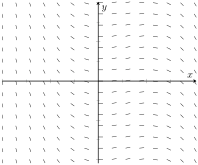
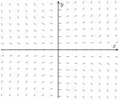
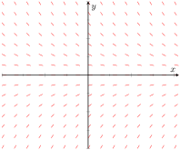
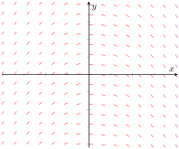

Skip to main content
Contents Dark Mode Prev Up Next \(\require{cancel}\newcommand\blank[2]{\,\colorbox{gray}{$\phantom{\rule{#1pt}{#2pt}}$}\,}
\newcommand{\highlight}[1]{{\color{blue}{#1}}}
\newcommand{\ds}{\displaystyle}
\newcommand{\fp}{f\hskip.75pt '}
\newcommand{\fpp}{f\hskip.75pt ''}
\newcommand{\lz}[2]{\frac{d#1}{d#2}}
\newcommand{\lzn}[3]{\frac{d^{#1}#2}{d#3^{#1}}}
\newcommand{\lzo}[1]{\frac{d}{d#1}}
\newcommand{\lzoo}[2]{{\frac{d}{d#1}}{\left(#2\right)}}
\newcommand{\lzon}[2]{\frac{d^{#1}}{d#2^{#1}}}
\newcommand{\lzoa}[3]{\left.{\frac{d#1}{d#2}}\right|_{#3}}
\newcommand{\plz}[2]{\frac{\partial#1}{\partial#2}}
\newcommand{\plzoa}[3]{\left.{\frac{\partial#1}{\partial#2}}\right|_{#3}}
\newcommand{\inflim}[1][n]{\lim\limits_{#1 \to \infty}}
\newcommand{\primeskip}{\hskip.75pt }
\newcommand{\infser}[1][1]{\sum_{n=#1}^\infty}
\newcommand{\Fp}{F\hskip.75pt '}
\newcommand{\Fpp}{F\hskip.75pt ''}
\newcommand{\yp}{y\hskip.75pt '}
\newcommand{\gp}{g\hskip.75pt '}
\newcommand{\dx}{\Delta x}
\newcommand{\dy}{\Delta y}
\newcommand{\ddz}{\Delta z}
\newcommand{\thet}{\theta}
\newcommand{\norm}[1]{\left\lVert#1\right\rVert}
\newcommand{\vnorm}[1]{\left\lVert\vec #1\right\rVert}
\newcommand{\snorm}[1]{\left|\left|\,#1\,\right|\right|}
\newcommand{\la}{\left\langle}
\newcommand{\ra}{\right\rangle}
\newcommand{\dotp}[2]{\vec #1 \cdot \vec #2}
\newcommand{\proj}[2]{\text{proj}_{\,\vec #2}{\,\vec #1}}
\newcommand{\crossp}[2]{\vec #1 \times \vec #2}
\newcommand{\veci}{\vec i}
\newcommand{\vecj}{\vec j}
\newcommand{\veck}{\vec k}
\newcommand{\vecu}{\vec u}
\newcommand{\vecv}{\vec v}
\newcommand{\vecw}{\vec w}
\newcommand{\vecx}{\vec x}
\newcommand{\vecy}{\vec y}
\newcommand{\vrp}{\vec r\hskip0.75pt '}
\newcommand{\vrpp}{\vec r\hskip0.75pt ''}
\newcommand{\vsp}{\vec s\hskip0.75pt '}
\newcommand{\vrt}{\vec r(t)}
\newcommand{\vst}{\vec s(t)}
\newcommand{\vvt}{\vec v(t)}
\newcommand{\vat}{\vec a(t)}
\newcommand{\px}{\partial x}
\newcommand{\py}{\partial y}
\newcommand{\pz}{\partial z}
\newcommand{\pf}{\partial f}
\newcommand{\unittangent}{\vec{{}T}}
\newcommand{\unitnormal}{\vec{N}}
\newcommand{\unittangentprime}{\vec{{}T}\hskip0.75pt '}
\newcommand{\R}{mathbb{R}}
\newcommand{\mathN}{\mathbb{N}}
\newcommand{\surfaceS}{\mathcal{S}}
\newcommand{\zerooverzero}{\displaystyle \raisebox{8pt}{\text{``\ }}\frac{0}{0}\raisebox{8pt}{\textit{ ''}}}
\newcommand{\abs}[1]{\left\lvert #1\right\rvert}
\newcommand{\sech}{\operatorname{sech}}
\newcommand{\csch}{\operatorname{csch}}
\newcommand{\curl}{\operatorname{curl}}
\newcommand{\divv}{\operatorname{div}}
\newcommand{\Hess}{\operatorname{Hess}}
\newcommand{\lt}{<}
\newcommand{\gt}{>}
\newcommand{\amp}{&}
\definecolor{fillinmathshade}{gray}{0.9}
\newcommand{\fillinmath}[1]{\mathchoice{\colorbox{fillinmathshade}{$\displaystyle \phantom{\,#1\,}$}}{\colorbox{fillinmathshade}{$\textstyle \phantom{\,#1\,}$}}{\colorbox{fillinmathshade}{$\scriptstyle \phantom{\,#1\,}$}}{\colorbox{fillinmathshade}{$\scriptscriptstyle\phantom{\,#1\,}$}}}
\newcommand{\sfrac}[2]{{#1}/{#2}}
\)
Chapter 7 Proteus Chpt 8 Questions
Exercise 36 . Initial Value Problem Solution.
Which of the following is a solution to the initial value problem
\begin{equation*}
\frac{dy}{dx} = 2y - 10,\quad y(0) = 8\text{?}
\end{equation*}
Exercise 37 . Slope Field Identification.
Which slope field corresponds to each of the following first-order differential equations?
Match:
\(\frac{dy}{dx} = x - y\)
Compare the behavior of the slopes in this field with the equation \(\frac{dy}{dx} = x - y\text{.}\)
Examine whether the slopes depend on both \(x\) and \(y\) or just one variable.
Check if the slope patterns match the expected behavior from \(\frac{dy}{dx} = x - y\text{.}\)
Consider how the slopes should change as \(x\) and \(y\) vary.
Exercise 38 . Match Differential Equations with Solutions.
Exercise 39 .
Match each slope field below with the appropriate differential equation.

The
\(y\) and the
\(x\) axis are shown both uncalibrated. In the second and the third quadrants the field lines towards larger negative values are south facing. The field lines closer to the
\(y\) axis are south-east facing. Around the
\(y\) axis the field lines are almost horizontal. In the first and the fourth quadrants the field lines closer to the
\(y\) axis are east facing but for greater values of
\(x\) they are south-east facing.

The field lines are concentric facing upwards in the second and the first quadrant along the positive
\(y\) axis. The lines furthest away from the origin are more circular and the lines closest to the
\(x\) axis are almost parallel to the
\(x\) axis. Similarly in the third and the fourth quadrant the field lines are concentric along the negative
\(y\) axis and the ones away from origin are more circular and the ones closest to the
\(x\) axis are almost parallel to the
\(x\) axis.

The field lines in the second and the first quadrant are south-east facing and appear to be east facing when they come very close to the
\(x\) axis. Similarly the field lines in the third and the fourth quadrants are north-east facing and become east facing when they come very close to the
\(x\) axis.

The field lines appear to be concentric dome shaped lines with peaks along the positive
\(y\) axis.
\(\yp=xy\) (b)
\(\yp = -y\) (c)
\(\yp = -x\) (d)
\(\yp = x(1-x)\) (a)